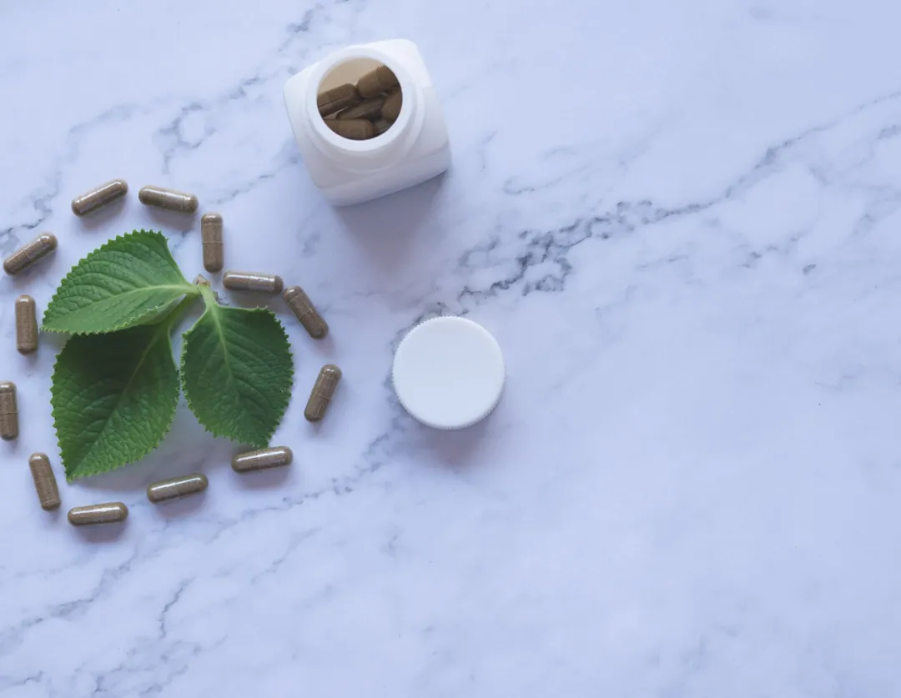

Lepam in Patna

Ask any grandmother in Bihar what to do for a sprained ankle and she may tell you to apply a paste of haldi and chuna, or warm a paste of ajwain and sarson tel. Those household remedies are distant cousins of one of Ayurveda's most precisely described treatments: lepa, the medicated paste. In clinical Ayurveda, though, a lepa is not a guess. The herbs, the liquid used to grind them, the thickness of the layer, the direction of application and the moment of removal are all specified.
What Lepam means
Lepa comes from the Sanskrit root lip, "to smear" or "to anoint". Lepam is the common South Indian and Kerala form of the word. A lepa is made by grinding dry or fresh herbs into a fine paste with water, decoction, milk, vinegar-like fermented liquids, honey, ghee or oil, depending on the purpose, and applying it to a defined area of the body.
Classical texts describe three kinds by thickness and character:
- Pralepa: thin and cooling, often used where there is heat or inflammation.
- Pradeha: thicker, either warming or cooling, used especially for vata and kapha swellings and pain.
- Alepa: of intermediate thickness, used in wound and skin care.
A treatment with a long written history
Lepa is among the best documented external treatments in Ayurveda. Sushruta Samhita, the classic of the surgical school whose core is generally dated to the centuries around the start of the common era, discusses lepa in detail in its chapters on swellings and wounds. It gives practical rules that are still taught: a lepa should usually be applied against the direction of hair growth so that it enters the hair follicles; it should not be applied over an old, dried layer; and it should be removed before it dries completely, because a dry paste no longer helps and can irritate the skin. Charaka Samhita and Ashtanga Hridaya also describe pastes for joint pain, skin disorders, swelling and headaches.
Lepa is part of the pan-Indian classical tradition, not a regional invention. Kerala practice uses the name Lepam and has its own favourite formulations, but the method itself is described in the oldest texts.
How it is understood to work
The classical view
The skin is described as a seat of bhrajaka pitta, which is said to absorb and process what is applied to it. A paste brings the potency (virya) of herbs into contact with the affected area for a sustained period. Warming pastes made with herbs such as dashanga or kottamchukkadi-type combinations are used for cold, stiff, vata or kapha-type pain and swelling. Cooling pastes made with herbs like chandana (sandalwood) or similar are used for heat, redness and burning linked with pitta.
What research says
Lepa is used in many published Ayurvedic case reports and small trials, usually as one part of a combined plan. Recent examples in the Journal of Ayurveda and Integrative Medicine include a 2025 randomised trial of an integrated protocol for ankle sprains in sports injuries, a 2025 case report on acute disc prolapse and a 2025 case report on a venous leg ulcer, each of which used local applications among several measures. Because these studies combine treatments, they cannot tell us what the lepa alone contributed. The honest summary is that lepa is widely used, plausible for local symptom relief and needs better targeted research.
Who may Lepam suit?
- Local joint pain and stiffness, for example knee or ankle pain
- Soft tissue swelling after minor strains, once fracture and serious injury are ruled out
- Some localised skin complaints, after examination
- Muscle pain in a specific area
- Stress or heat-related headaches, using forehead pastes, after other causes are excluded
Who should avoid it or take care
- Open, infected or bleeding wounds, unless a wound-care paste is specifically prescribed
- Known allergy or sensitive skin reactions to herbs
- Areas of very poor sensation, such as diabetic neuropathy in the feet, where heat and irritation may go unnoticed
- Hot, red, very swollen joints with fever, which need medical evaluation first
- Suspected fractures, deep vein thrombosis or severe injuries
- Pregnant women, where some herbs must be avoided; consult first
Lepam does not replace treatment for arthritis, gout, infection or injury. Continue the medicines your doctors have prescribed.
Lepam at Sabka Ved Wellness
Consultation and examination
Dr. Aditya Kunal examines the area, asks how and when the problem started and whether it is hot or cold, worse in the morning or evening, and better with heat or with cold. These answers decide whether a warming or cooling paste is suitable, and whether a lepa is appropriate at all.
Fresh preparation
The selected herbal powders are ground into a smooth paste with the chosen liquid just before use. Fresh preparation matters: a paste kept for hours loses moisture and, by classical reasoning, potency.
Application, for understanding
- The area is cleaned and, if needed, lightly warmed.
- The paste is applied evenly to the prescribed thickness, typically against the direction of hair growth.
- You rest while the paste acts, usually for 20 to 45 minutes.
- Before it dries and cracks, the paste is removed gently with warm water.
- The area is dried and kept covered and warm if a warming paste was used.
Please do not experiment with strong pastes at home; some herbs can irritate or burn the skin if used wrongly.
Aftercare
Avoid cold water on the area immediately after a warming lepa, and rest the joint if advised. Diet advice depends on the cause: for kapha-type swelling, light food and avoiding curd at night; for pitta-type heat, avoiding very spicy, sour and fermented food.
Household pastes versus clinical lepa
Home remedies have their place, and many families in Bihar use them sensibly for small knocks and aches. The difference with a clinical lepa lies in the details. A doctor first decides whether the problem is the kind that a paste can help with at all; a swollen, hot knee with fever, for example, needs blood tests and possibly an orthopaedic opinion, not haldi. Then the paste is chosen for the specific quality of the problem: warming for cold, stiff pain, cooling for heat and redness. The base liquid matters too, because grinding the same herbs in water, warm decoction, ghee or a fermented liquid changes how the paste behaves.
Finally, there is safety. Lime (chuna) and some strong herbs can cause chemical burns or blisters when left on too long, especially on thin skin or in elderly people. Clinical lepa is applied at the right thickness, watched and removed in time. That attention is what turns a household habit into a treatment.
What it costs, and why
Lepam is one of the more affordable procedures, but quality still has a cost: good herbal powders, fresh preparation for each application, the right liquids, therapist time for application, waiting and removal, clean linen, and the doctor's assessment that decides which paste is right. A wrong paste is not a saving. Fixed prices are not published because plans vary; you will know what yours includes in advance.
Lepam alongside other local therapies
| Therapy | Main idea | Typical use |
|---|---|---|
| Lepam | Herbal paste left on, removed before drying | Local pain, swelling, skin |
| Upanaha | Warm paste bandaged on for hours | Stiff, cold, painful joints |
| Janu or kati basti | Warm oil pooled on the area | Chronic joint or back pain |
| Pinda sweda | Herbal boluses with heat | Stiffness and pain |
Book a consultation
If a joint, muscle or patch of skin is troubling you, get it examined before reaching for a paste. Request a consultation through our appointment page or book online at superprofile.bio/bookings/dradityakunal.
Sources
- Integrated protocol in ankle sprain in sports injuries: a randomized controlled clinical trial. J Ayurveda Integr Med, 2025
- Ayurveda management of an acute intervertebral disc prolapse: a case report. J Ayurveda Integr Med, 2025
- A non-invasive Ayurveda management of venous leg ulcer: a case report. J Ayurveda Integr Med, 2025
We also serve patients from


Preparation, therapy, recovery. In that order.


Related therapies
Pages that pair naturally with this one.


Questions about Lepam

Lepam, or lepa, is a freshly prepared herbal paste applied to a specific area such as a joint, swelling or patch of skin, and removed before it dries. It is described in detail in Sushruta Samhita.
Classical texts say a dried paste no longer acts and can irritate the skin. Removing it while moist is one of the oldest rules of lepa practice.
It is used to support relief of local pain and stiffness, often alongside other therapies. It does not cure arthritis, and the cause of the pain should be assessed first.
It can be used with care, but areas with reduced sensation need caution because heat or irritation may not be felt. The doctor will decide.
Lepam is left on for a shorter time and removed before drying. Upanaha is a warm paste covered with leaves and bandaged in place for several hours.